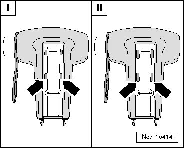
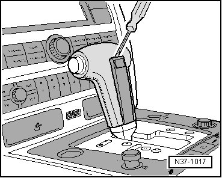
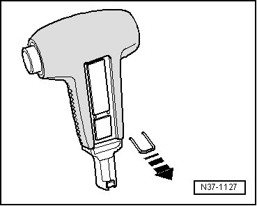
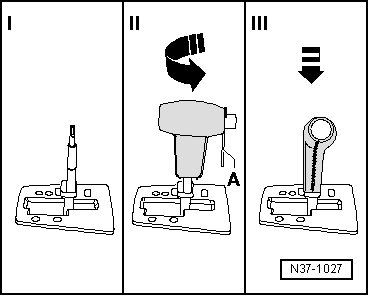
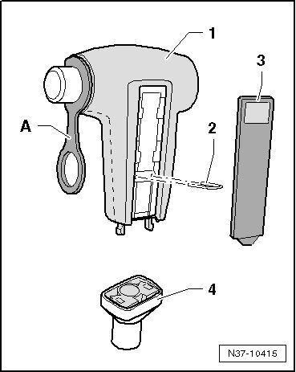
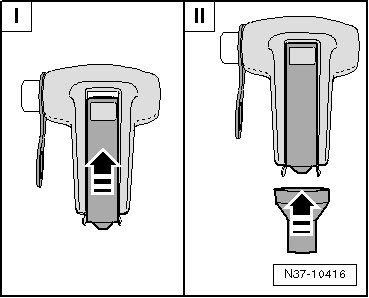
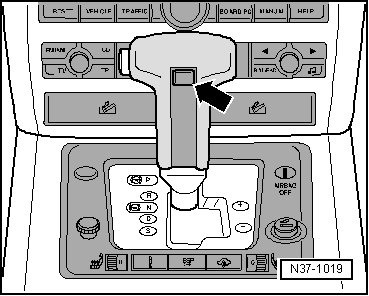

Selector Lever Handle
Selector Lever Handle
• There are four recesses in the handle - arrows - for securing the insert. These recesses were changed. When installing the handle, use the correct procedure for installing the insert.
• Only handles with the modified recesses are delivered as replacement parts. The insert remains the same.

I Handle with old recesses
II Handle with modified recesses
Removing
• This procedure applies to all handles.
To ensure the handle is not damaged adhere to this sequence:
- Pry out selector.

- Remove bracket from handle.

- Pull button passed pressure point until it is locked in position.
- Then detach handle from selector lever.
Installing
• Note that there are different procedures for installing the insert.
If the button is inadvertently pressed into the handle, hold handle vertically and at the bottom (!). Carefully blow button outwards again using compressed air until it can be pulled out over the pressure point by hand.
- Reinstall assembly aid - A - (enclosed with new handle).

- Push in clip.
Handle with Old Recesses
- Press the insert into the handle until it stops.
• To make sure the tabs on the insert are seated correctly in the recesses on the handle:
- Move the insert approximately 1 mm back and forth in the handle by hand.
Handle with Modified Recesses
- Insert the retainer - 2 -.

- I - Press the insert into the handle until it stops then slide it upward - arrow -.

- II - Place the sleeve on the handle.
Continuation for Both Handles
- Place selector lever in position "N".
- I - Guide sleeve carefully through cover strip and the cross slide lying underneath.
- Guide the sleeve carefully through the cover strip when inserting. If carelessly pushing the sleeve in, the cover strip will break.
- II - Fit handle lengthwise until stop, then turn.
Installation position: Switch faces driver.
- III - Press handle on selector lever up to stop until it engages noticeably.
- Remove assembly aid - A -, operate switch and remove sleeve upward.
- Remove protective foil on adhesive surface and affix label - arrow -.
